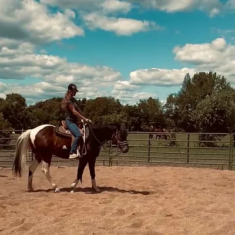
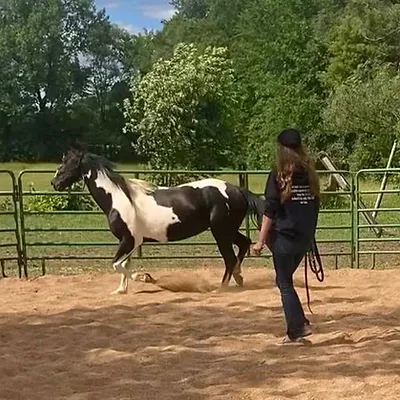
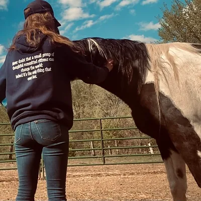
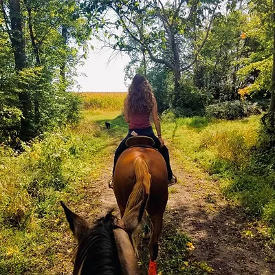
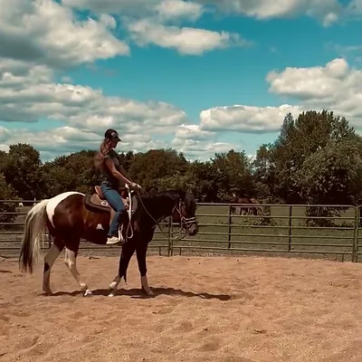
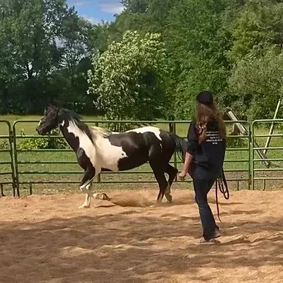
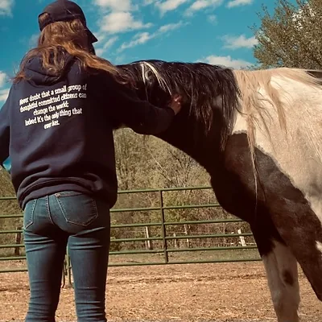
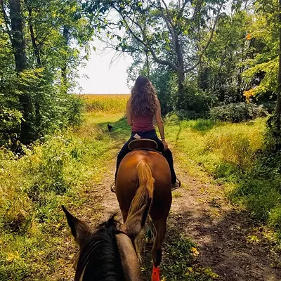

HA Horsemanship
Hadley Ann Horsemanship
Hadley has been around horses her whole life but first started riding almost 15 years ago. Starting out in an English saddle, she attended lessons in Michigan with a USHJA certified trainer before later transferring to a Western saddle where she attended Barrel lessons with Boo Flournoy in Ocala, FL while leasing a gelding of her own trained with the Downunder Horsemanship method.
Shortly after attending a Clinton Anderson Walk-About-Tour where she was able to talk to Clinton one on one, she took home Rein, her own 3 year old to start from the ground up.
Hadley competed in several disciplines for multiple years, all the way from entering Jackpots to attending WSCA shows.
She stopped competing to allow more room for training and started her journey in resale by taking in one & two year olds for a local APHA breeder, starting them from the ground up using the Downunder Horsemanship method.
In 2021, Hadley partnered with Pony Tales Refuge & Rehab out of Wisconsin, becoming a STAR Trainer and taking in a case that was "untouchable".
Hadley is now expanding her services to those that may need them. She uses a Natural Horsemanship approach using the Downunder Horsemanship method. She is a big groundwork advocate, believing that if you can't do it on the ground, you shouldn't be doing it undersaddle.
Hadley likes to encourage the "thinking side" of a horse's brain in contrast to the reactive side, thus she is always taking into account their different personalities and takes the time to understand the horse as an individual and how their brain works. With this approach, you're able to work with them and not against them, ultimately setting them up for success.


Groundwork is the foundation to a well rounded, mannered and versatile partner. Your young ones will be started correctly from the ground up. Extensive groundwork will be a given along with sensitizing to pressure and a wide variety of desensitization to different objects and atmospheres. Along with regular groundwork, your youngster will also graduate with a concept of the basics under saddle (gas pedal, brakes, steering wheel & reverse)
*Please note that any horse that has not been ridden before, regardless of age, gets put through the Colt Starting program in contrast to the Tune Up/Refresher program.

In order to enjoy the warmer temperatures this year, it is always nice having an "up-to-date" horse to spend those days with.
The basics will be refreshed both on and off the ground and their time will be spent engaging in confidence building exercises, crossing obstacles, sensitizing to pressure of all forms and desensitizing to various objects and atmospheres, lateral flexion and diagonal work, trail riding and "problem" behaviors will also be addressed.

Clinton Anderson's Groundwork Fundamentals will be finished, providing your equine with suppleness, softness and versatility. Basic groundwork including but not limited to, maintaining personal space, leading respectfully, standing tied, picking hooves and trailer loading will also be addressed. Desensitizing to various objects and circumstances and exposure to trails is one of the many things your horse will endure that makes for a well rounded partner with the correct foundation to build further training on.

Gabby is a great example of a damaged horse that required special catering to her individual needs. Reactive, fearful and flighty, the smallest things would send her into a panic where she became a danger to herself and others. A slow and gentle approach combined with patience and trust in the process came with modifications to my training methods. Instead of asking her to move her feet, I asked her to keep them still. Showing these rescue cases that they're safe now and in trustworthy and loving hands, allows them to come out of their shell and show their true disposition, which usually isn't anything like the disposition they had in the beginning. This then allows me to gather most of the information I need to again modify my methods around their "new personality" and set them up for the best success going forward.

For this program, your horse will be exposed to 130 acres of a variety of mowed trails. Exposure to situations outside of a horse's regular comfort zone is important to ensure a versatile partner. My goal is to ensure that when a horse leaves their comfort zone, they use the thinking side of their brain and not the reactive side of their brain. Preparation for trail riding is conducted in the round pen and arena and the basics are refreshed both on and off the ground. I make sure that horses are not rushed through any processes to prevent any holes from forming in their training.
Services

Colt Starting
$725/month - 2 month minimum
Groundwork is the foundation to a well rounded, mannered and versatile partner. Your young ones will be started correctly from the ground up. Extensive groundwork will be a given along with sensitizing to pressure and a wide variety of desensitization to different objects and atmospheres. Along with regular groundwork, your youngster will also graduate with a concept of the basics under saddle (gas pedal, brakes, steering wheel & reverse)
*Please note that any horse that has not been ridden before, regardless of age, gets put through the Colt Starting program in contrast to the Tune Up/Refresher program.
Tune Ups/Refreshers
$650/month - 2 month minimum
In order to enjoy the warmer temperatures this year, it is always nice having an "up-to-date" horse to spend those days with.
The basics will be refreshed both on and off the ground and their time will be spent engaging in confidence building exercises, crossing obstacles, sensitizing to pressure of all forms and desensitizing to various objects and atmospheres, lateral flexion and diagonal work, trail riding and "problem" behaviors will also be addressed.

Groundwork
$500/month
Clinton Anderson's Groundwork Fundamentals will be finished, providing your equine with suppleness, softness and versatility. Basic groundwork including but not limited to, maintaining personal space, leading respectfully, standing tied, picking hooves and trailer loading will also be addressed. Desensitizing to various objects and circumstances and exposure to trails is one of the many things your horse will endure that makes for a well rounded partner with the correct foundation to build further training on.

Rescue Cases
Pictured with "Gabriella", the untouchable mare
Gabby is a great example of a damaged horse that required special catering to her individual needs. Reactive, fearful and flighty, the smallest things would send her into a panic where she became a danger to herself and others. A slow and gentle approach combined with patience and trust in the process came with modifications to my training methods. Instead of asking her to move her feet, I asked her to keep them still. Showing these rescue cases that they're safe now and in trustworthy and loving hands, allows them to come out of their shell and show their true disposition, which usually isn't anything like the disposition they had in the beginning. This then allows me to gather most of the information I need to again modify my methods around their "new personality" and set them up for the best success going forward.

Trails
For this program, your horse will be exposed to 130 acres of a variety of mowed trails. Exposure to situations outside of a horse's regular comfort zone is important to ensure a versatile partner. My goal is to ensure that when a horse leaves their comfort zone, they use the thinking side of their brain and not the reactive side of their brain. Preparation for trail riding is conducted in the round pen and arena and the basics are refreshed both on and off the ground. I make sure that horses are not rushed through any processes to prevent any holes from forming in their training.